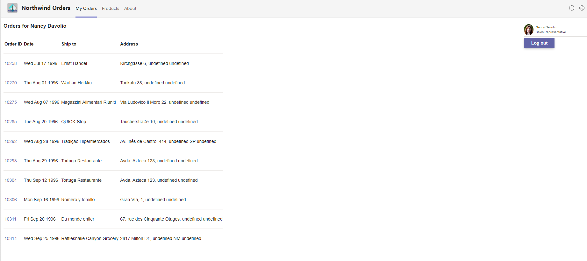

B04 - Teams styling and themes

Lab B04: Teams styling and themes
This is parth of Path B, which begins with an application that uses an authorization system other than Azure AD.
Are you on the right path? Expand these notes to find out!
There are two options for doing the labs:
-
The "A" path is for developers with apps that are already based on Azure Active Directory. The starting app uses Azure Active Directory and the Microsoft Authentication Library (MSAL).
-
the "B" path is for developers with apps that use some other identity system. It includes a simple (and not secure!) cookie-based auth system based on the Employees table in the Northwind database. You will use an identity mapping scheme to allow your existing users to log in directly or via Azure AD Single Sign-On.
In this lab you will begin with the application in folder B03-TeamsSSO, make changes as per the steps below to achieve what is in the folder B04-StyleAndThemes.
See project structures comparison in Exercise 1.
- B01-begin-app: Setting up the application
- B02-after-teams-login: Creating a Teams application
- B03-after-teams-sso: Adding Azure AD SSO to your app
- B04-after-apply-styling: Teams styling and themes(📍You are here)
In this lab you will learn to:
- Apply styles based on the Microsoft Teams figma to make your application look like it belongs in Microsoft Teams
- Display your application with the same color theme the user has selected in Microsoft Teams
- Switch your application's theme when the user changes the Microsoft Teams theme setting
Video briefing

Features
- Apply teams styling and themes to your existing application.
- Display and update themes along with the Microsoft Teams client
Project structure
Project files before and after this lab (open to display ►)
The project structure when you start of this lab and end of this lab is as follows. Use this depiction for comparison.
On your left is the contents of folder B03-after-teams-sso and on your right is the contents of folder B04-after-apply-styling.
- 🆕 New files/folders
- 🔺Files changed
Project Structure Before Project Structure After B03-after-teams-sso ├── client │ ├── components │ ├── navigation.js │ └── identity │ ├── aadLogin.html │ └── aadLogin.js │ ├── identityClient.js │ └── login.html │ └── login.js │ └── teamsLoginLauncher.html │ └── teamsLoginLauncher.js │ └── userPanel.js ├── modules │ └── env.js │ └── northwindDataService.js │ └── 🔺teamsHelpers.js ├── pages │ └── categories.html │ └── categories.js │ └── categoryDetails.html │ └── categoryDetails.js │ └── myOrders.html │ └── orderDetail.html │ └── orderDetail.js │ └── privacy.html │ └── productDetail.html │ └── productDetail.js │ └── termsofuse.html ├── index.html ├── index.js ├── 🔺northwind.css ├── manifest │ └── makePackage.js │ └── 🔺manifest.template.json │ └── northwind32.png │ └── northwind192.png │ └── constants.js │ └── identityService.js │ └── northwindDataService.js │ └── server.js ├── .env_Sample ├── .gitignore ├── package.json ├── README.mdB04-after-apply-styling ├── client │ ├── components │ ├── navigation.js │ └── identity │ ├── aadLogin.html │ └── aadLogin.js │ ├── identityClient.js │ └── login.html │ └── login.js │ └── teamsLoginLauncher.html │ └── teamsLoginLauncher.js │ └── userPanel.js ├── modules │ └── env.js │ └── northwindDataService.js │ └── 🔺teamsHelpers.js ├── pages │ └── categories.html │ └── categories.js │ └── categoryDetails.html │ └── categoryDetails.js │ └── myOrders.html │ └── orderDetail.html │ └── orderDetail.js │ └── privacy.html │ └── productDetail.html │ └── productDetail.js │ └── termsofuse.html ├── index.html ├── index.js ├── 🔺northwind.css ├── 🆕teamstyle.css ├── manifest │ └── makePackage.js │ └── 🔺manifest.template.json │ └── northwind32.png │ └── northwind192.png │ └── constants.js │ └── identityService.js │ └── northwindDataService.js │ └── server.js ├── .env_Sample ├── .gitignore ├── package.json ├── README.md
Exercise 1: Add CSS
Step 1: Create a CSS file for Teams theme styles
Create a file teamstyle.css in the client folder and copy below code block into it. These styles are based on the Teams UI Toolkit Figma. If you're working in React, you may want to use the Teams UI Toolkit React Components.
:root {
/* common */
--brand-color: #6264A7;
--button-color: #6264A7;
--button-text-color: #fff;
--button-hover-color: rgb(88, 90, 150);
--button-hover-text-color: #fff;
--button-active-color: rgb(70, 71, 117);
--button-active-text-color: #fff;
--button-border: 1px solid hsla(0,0%,100%,.04);
--button-shadow: rgb(0 0 0 / 25%) 0px 0.2rem 0.4rem -0.075rem;
--button2-color: #fff;
--button2-text-color: rgb(37, 36, 35);
--button2-hover-color: rgb(237, 235, 233);
--button2-active-color: rgb(225, 223, 221);
--button2-border: 1px solid rgb(225, 223, 221);
--button2-shadow: rgb(0 0 0 / 10%) 0px 0.2rem 0.4rem -0.075rem;
--button-disabled-color: rgb(237, 235, 233);
--button-disabled-text-color: rgb(200, 198, 196);
--input-background-color: rgb(243, 242, 241);
--input-border-color: transparent;
--input-border-width: 0 0 0.1429rem 0;
--input-focus-border-color: transparent;
--input-focus-border-bottom-color: #6264A7;
--table-color: transparent;
--table-border: 1px solid rgb(237, 235, 233);
--border-color: rgb(237, 235, 233);
/* light theme */
--font-color: rgb(37, 36, 35);
--background-color: #fff;
--link-color: #6264A7;
--border-color: #E1DFDD;
--warning-color: #C4314B;
}
[data-theme="dark"] {
--font-color: #fff;
--background-color: transparent;
--link-color: #A6A7DC;
--border-color: #605E5C;
--warning-color: #F9526B;
}
[data-theme="contrast"] {
--brand-color: #ffff01;
--font-color: #fff;
--link-color: #ffff01;
--background-color: transparent;
--border-color: #fff;
--button-color: transparent;
--button-text-color: #fff;
--button-hover-color: #ffff01;
--button-hover-text-color: #000;
--button-active-color: #1aebff;
--button-active-text-color: #000;
--button-border: .2rem solid #fff;
--input-background-color: transparent;
--input-border-color: #fff;
--input-border-width: 1px;
--input-focus-border-color: #1aebff;
--input-focus-border-bottom-color: #1aebff;
--warning-color: #ffff01;
}
body {
background-color: var(--background-color);
color: var(--font-color);
box-sizing: border-box;
font-size: 14px;
}
a, a:visited {
color: var(--link-color);
text-decoration: none;
}
a:hover, a:active {
text-decoration: underline;
}
table, caption, tbody, tfoot, thead, tr, th, td { /*reset */
margin: 0;
padding: 0;
border: 0;
font-size: 100%;
font: inherit;
vertical-align: middle;
border-collapse: collapse;
}
table {
display: table;
background-color: var(--table-color);
border-spacing: 0;
}
tr {
display: table-row;
border-bottom: var(--table-border);
}
th, td {
display: table-cell;
height: 3.4286rem;
padding: 0 0.5714rem;
}
th{
font-weight: 600;
}
button, input, optgroup, select, textarea {
font-family: inherit;
font-size: 100%;
line-height: 1.15;
margin: 0;
}
button {
min-width: 6rem;
font-weight: 600;
height: 2rem;
padding: 0 1.25rem;
vertical-align: middle;
border-radius: 2px;
background-color: var(--button-color);
color: var(--button-text-color);
border: var(--button-border);
box-shadow: var(--button-shadow);
overflow: visible;
}
button:hover {
background-color: var(--button-hover-color);
color: var(--button-active-text-color);
}
button:active {
background-color: var(--button-active-color);
color: var(--button-active-text-color);
box-shadow: none;
}
button[disabled] {
background-color: var(--button-disabled-color);
color: var(--button-disabled-text-color);
box-shadow: none;
}
button:not(:last-child) {
margin-right: 0.5rem;
}
button.secondary {
background: var(--button2-color);
border: var(--button2-border);
color: var(--button2-text-color);
box-shadow: var(--button2-shadow);
}
button.secondary:hover {
background-color: var(--button2-hover-color);
}
button.secondary:active {
background-color: var(--button2-active-color);
}
label {
margin: 0 0.7143rem 0.2857rem 0;
}
input {
background-color: var(--input-background-color);
padding: 0.3571rem 0.8571rem;
line-height: unset;
border-width: var(--input-border-width);
border-radius: 0.2143rem 0.2143rem 0.1429rem 0.1429rem;
border-color: var(--input-border-color);
outline-style: none;
overflow: visible;
margin-bottom: 1.4286rem;
}
input:focus {
border-color: var(--input-focus-border-color);
border-bottom-color: var(--input-focus-border-bottom-color);
}
[type=checkbox], [type=radio] {
padding: 0;
margin-right: 0.5rem;
}
hr {
border: 0;
height: 1px;
background: var(--border-color);
}
/* Text styling classes */
.medium {
font-size: 1rem;
}
.small {
font-size: 0.8571rem;
}
.smaller {
font-size: 0.7143rem;
}
.large {
font-size: 1.2857rem;
}
.larger {
font-size: 1.7143rem;
}
.danger, .warning, .alert, .error {
color: var(--warning-color);
}
/* Font */
@font-face {
font-family: 'Segoe UI Web';
src: url('https://static2.sharepointonline.com/files/fabric/assets/fonts/segoeui-westeuropean/segoeui-regular.woff2') format('woff2'), url('https://static2.sharepointonline.com/files/fabric/assets/fonts/segoeui-westeuropean/segoeui-regular.woff') format('woff');
font-weight: 400;
font-style: normal;
}
body {
-moz-osx-font-smoothing: grayscale;
-webkit-font-smoothing: antialiased;
font-family: 'Segoe UI', 'Segoe UI Web', -apple-system, BlinkMacSystemFont, 'Roboto', 'Helvetica Neue', sans-serif;
}
This CSS contains basic stylings for Teams UI. After applying the styles, the existing web app gets more consistent look-and-feel to Teams client.
The CSS also includes dark and high-contrast mode. The color switch is done with CSS variables. In the next step, you will enable the theme switching functionality in JavaScript.
Step 2: Import the new CSS
To import the teamstyle.css so it is loaded in all pages, add this statement at the top of your northwind.css file.
@import "teamstyle.css";
Exercise 2: Update and run the project
Step 1: Modify modules\teamsHelpers.js
The Teams client supports three themes: light mode, dark mode, and high contrast mode, which is an acceissibility feature for users with low visual acuity. As the users switch the themes, your application should also switch its theme so as to blend in. To detect theme switching in Teams client we'll have to use the global microsoftTeams's context.
We 'll add a function setTheme() to switch the css between the application's native style and the team's themes. Add this code to teamsHelpers.js:
// Set the CSS to reflect the desired theme
function setTheme(theme) {
const el = document.documentElement;
el.setAttribute('data-theme', theme);
};
In order to display the application in a particular theme, setTheme() applies a data-theme value in the root of the content, like, <html data-theme='dark'>, so the teamstyle.css will use a correct set of colors & styles for each theme. The color change is done with the CSS variables.
Now add in-line code into teamsHelpers.js to detect current context with getContext() and set the theme to match the current theme in Microsoft Teams. The code also registers an event handler that updates the application's theme when a user changes the theme in Microsoft Teams. Note that some browsers and the Teams desktop client will not honor the await keyword for inline code; therefore this code has been wrapped in an immediately-invoked function expression.
Copy and paste below code block for this purpose:
// Inline code to set theme on any page using teamsHelpers
(async () => {
await ensureTeamsSdkInitialized();
const context = await microsoftTeams.app.getContext();
setTheme(context.app.theme);
// When the theme changes, update the CSS again
microsoftTeams.registerOnThemeChangeHandler((theme) => {
setTheme(theme);
});
})();
Step 2: Start your local project
Now it's time to run your updated application and run it in Microsoft Teams. Start the application by running below command:
npm start
Step 3: Run the application in Teams client
Once the teams tab app is added, the personal tab will open My Orders tab. The application will now have the team's native look and feel.

Here's how to change themes in teams client. Notice how the teams tab app also detects and changes its theme.

Next steps
Congratulations! You have completed all core application development labs in path B.
It's time to choose your own adventure by doing some or all of the extended labs! Note that the extended lab files are based on the "A" path; specifically they are based on the lab A03 solution files. So you have two choices:
-
Switch to Path A now by doing the labs or make a copy of the A03 solution files and apply your .env file settings there. The rest of the setup should be the same.
-
Live dangerously and try following the labs building on the solution to lab B04 that you just completed. It has been said to work but isn't as thoroughly tested, so it's up to you if you're willing to debug the code.
Here are the extended labs: